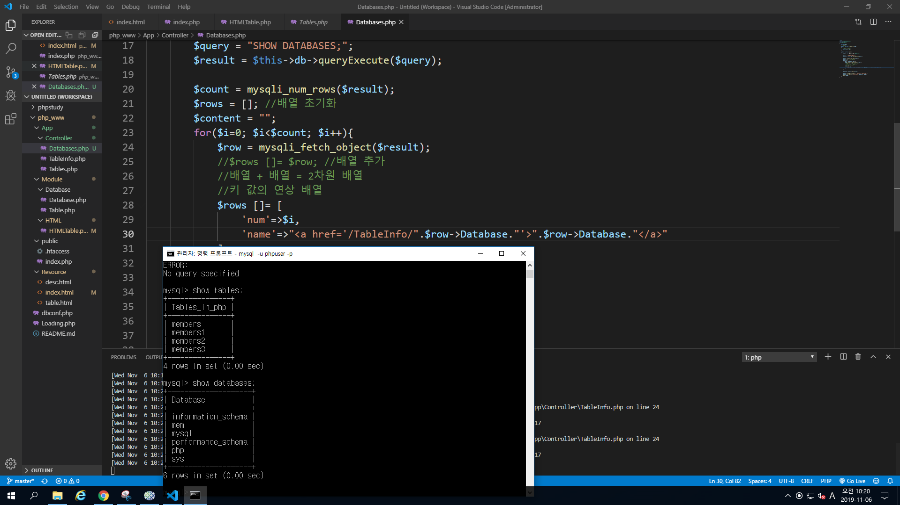
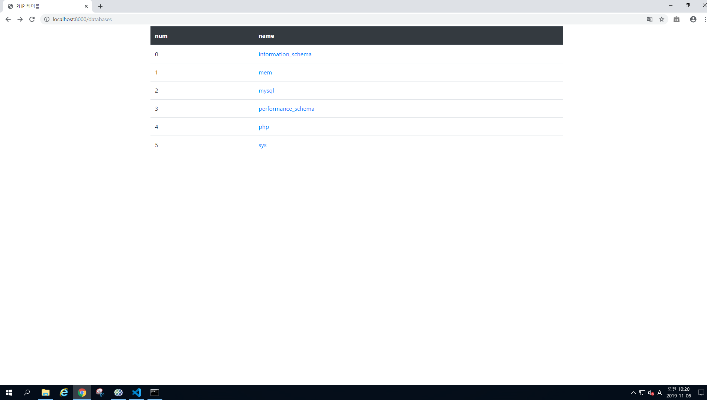
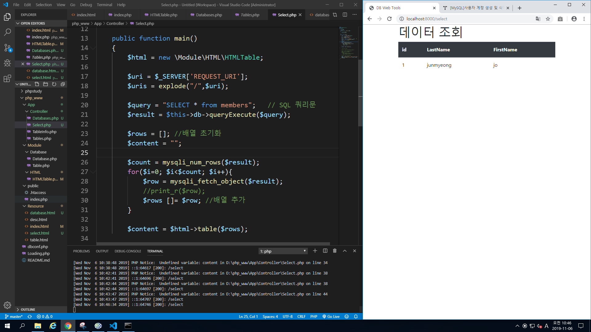
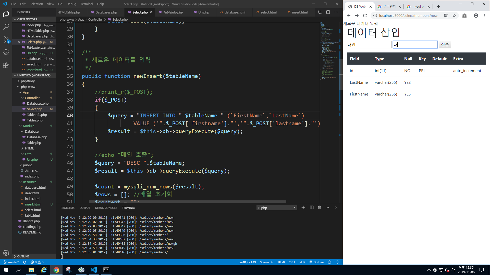
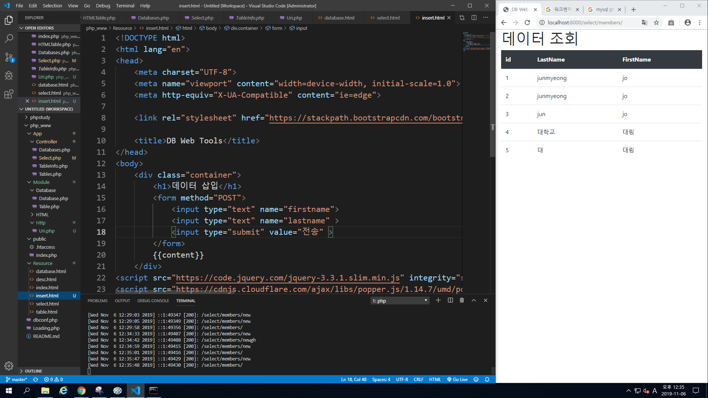
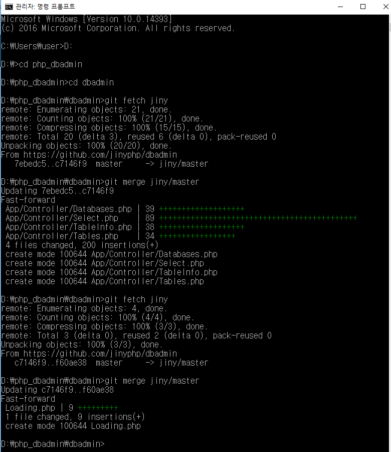
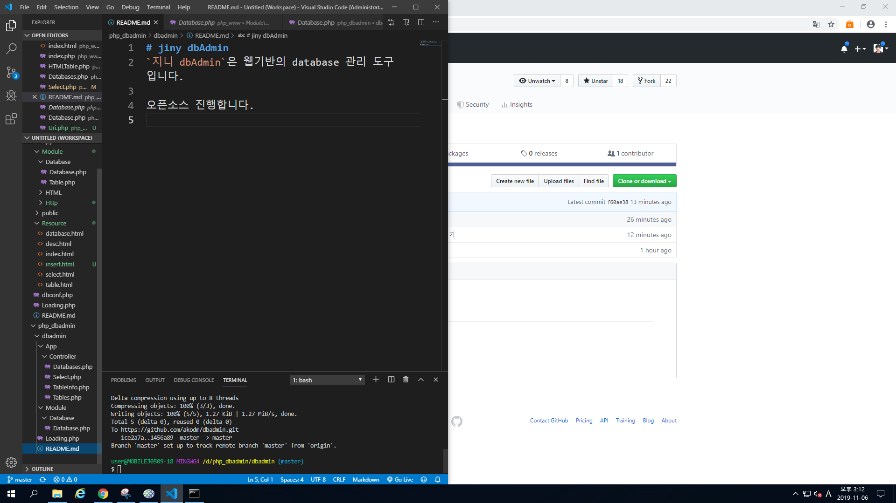

11주차 수업 2019.11.06
PHP DB와 데이터 삽입


데이터 베이스의 테이블에 href를 붙여 DB에서 바로 이동할 수 있도록 수정

테이블에 넣었던 데이터를 불러와 보여준다.


Select.php를 insert.html와 붙이고
LastName 값과 FirstName을 받아와 전송 버튼을 누를 시
member 테이블에 데이터를 넣는다.

Git에서 PHPAdmin를 포크 시켜 가져온 다음
폴더를 다운 받고 나의 git주소와 본래 git주소를 등록시켜
수정하거나 제작한 코드를 push를 해서 올려보내면
본문의 해당 관리자가 승인 했을 경우 문서가 합쳐지게 된다.
또한 타인이 수정했을 경우 수정사항을 바로 받아올 수 있다.
